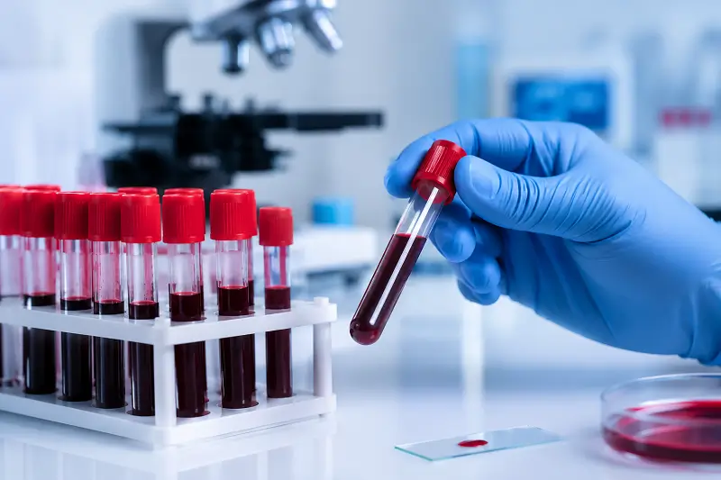
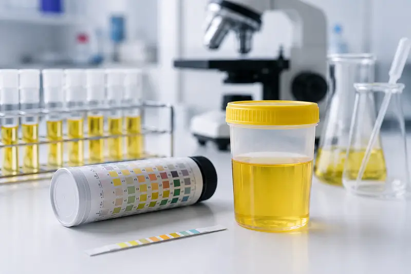
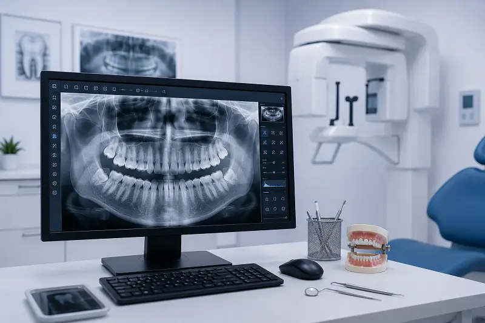
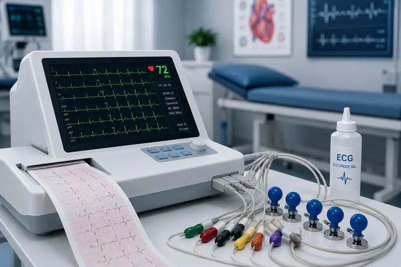

Explore our advanced diagnostic departments including Pathology, Digital X-Ray, Dental X-Ray, ECG, Urine Testing and Doctor Consultation with detailed information about available tests and healthcare services.
We provide advanced pathology testing services including Biochemistry, Hematology, Serology, Clinical Pathology and various blood & urine investigations with accurate reporting and modern laboratory technology.

Used for diabetes screening and blood glucose monitoring.
Measures average blood sugar level over the last 2–3 months.
Used to measure cholesterol and assess heart disease risk.
Evaluates liver health and detects liver-related diseases.
Checks kidney performance and related health conditions.
Helps detect thyroid disorders and hormonal imbalance.
Evaluates kidney function and detects renal disorders.
Helps assess kidney performance and protein metabolism.
Used to diagnose gout, joint pain and kidney stone risk.
Measures calcium level for bone and parathyroid disorders.
Evaluates bone health and kidney-related abnormalities.
Detects electrolyte imbalance and dehydration problems.
Helps monitor heart, kidney and electrolyte disorders.
Evaluates acid-base balance and dehydration conditions.
Used for jaundice diagnosis and liver function assessment.
Detects liver damage and hepatitis-related disease.
Evaluates liver, heart and muscle-related disorders.
Helps diagnose liver disease and bone disorders.
Measures nutritional status and liver/kidney health.
Evaluates liver function and nutritional condition.
Helps assess immune system and liver disorders.
Used for diagnosis of pancreatic disease and abdominal pain.
Detects pancreas inflammation and digestive disorders.
Measures vitamin D deficiency and bone health condition.
Detects vitamin B12 deficiency causing weakness and anemia.
Helps evaluate muscle damage and cardiac disorders.
Detects tissue damage and various metabolic disorders.
Used for diagnosis of anemia and iron deficiency.
Measures iron storage level and detects iron deficiency.
Used to check infection, anemia and blood health.
Measures white blood cells to detect infection and immune disorders.
Evaluates different types of white blood cells in the body.
Measures red blood cells and helps detect anemia.
Measures packed cell volume to evaluate anemia and dehydration.
Helps classify anemia based on red blood cell size.
Measures average hemoglobin amount inside red blood cells.
Evaluates hemoglobin concentration in red blood cells.
Examines blood cells for infection, anemia and blood disorders.
Measures blood clotting function and bleeding disorders.
Evaluates the body's blood clotting mechanism.
Monitors blood clotting and anticoagulant therapy.
Helps diagnose allergy, asthma and parasitic infection.
Detects inflammation and autoimmune disease.
Measures hemoglobin level and detects anemia.
Helps monitor dengue and bleeding disorders.
Detects dengue infection and helps early treatment planning.
Detects inflammation and infection inside the body.
Helps diagnose streptococcal infection and rheumatic fever.
Used for diagnosis of rheumatoid arthritis and autoimmune disease.
Screening test for syphilis and sexually transmitted infection.
Used for HIV infection screening and diagnosis.
Detects Hepatitis B virus infection and liver disease.
Used for Hepatitis C virus infection screening.
Helps diagnose rickettsial fever and related infections.
Rapid diagnostic test for typhoid fever detection.
Detects chikungunya viral infection and fever-related illness.
Detects antibodies developed after COVID-19 infection or vaccination.
Helps diagnose scrub typhus infection causing fever, body pain and weakness.
Helps diagnose typhoid fever and bacterial infection.
We provide routine and specialized urine investigations for infection detection, kidney disorders, diabetes monitoring and overall urinary health assessment with accurate laboratory reporting.

Detects urine infection, kidney disorders and diabetes signs.
Identifies bacterial infection in urinary tract.
Safe and confidential pregnancy detection test.
Helps detect kidney disease and protein loss.
Used for diabetes screening and glucose monitoring.
Helps diagnose diabetes complications and metabolic disorders.
Detects pus cells, crystals and microscopic abnormalities.
Evaluates kidney function and protein loss over 24 hours.
Helps assess kidney performance and renal disorders.
We provide advanced digital X-ray imaging with fast, accurate and reliable reporting using modern low-radiation technology for better diagnosis.
Used to evaluate lungs, infection and tuberculosis.
Advanced chest imaging for emergency patients.
Used for skull fracture and head injury diagnosis.
Helps detect sinus infection and facial pain causes.
Used for neck pain and cervical spondylosis diagnosis.
Helps diagnose lower back pain and spinal disorders.
Evaluates middle back pain and vertebral problems.
Used for scoliosis and posture evaluation.
Detects arthritis and knee joint abnormalities.
Used for shoulder pain and bone dislocation diagnosis.
Evaluates elbow injury and fracture.
Used for wrist pain and fracture diagnosis.
Used for fracture and swelling assessment.
Detects finger fracture and joint injury.
Helps evaluate foot fracture and deformity.
Used for ankle injury and swelling diagnosis.
Used for pelvic fracture and bone abnormality diagnosis.
Helps diagnose hip pain, arthritis and fracture.
We provide all types of Digital X-Ray services including chest, spine, skull, joints, bones, dental imaging and full body X-Ray investigations with accurate reporting and modern digital technology.
We provide advanced digital dental X-ray imaging for tooth decay, jaw disorders, infection detection and complete oral health assessment with clear imaging and low-radiation technology.

Helps diagnose tooth decay, infection and jaw problems.
Provides panoramic imaging of teeth and jaw structure.
Detects tooth root infection and gum-related problems.
Used for wisdom tooth pain and impacted tooth diagnosis.
Helps evaluate jaw fracture and bone abnormalities.
Advanced digital dental imaging for accurate oral diagnosis.
We provide advanced 12-channel & 12-lead digital ECG services for accurate heart rhythm analysis, cardiac monitoring and early detection of heart-related problems with fast and reliable reporting.

Advanced ECG monitoring for accurate cardiac evaluation and detects heart rhythm abnormalities and cardiac disease
We provide professional doctor consultation services for general medicine, diabetes, skin disease, orthopedic problems and overall healthcare guidance with experienced medical professionals.
Consultation for fever, weakness, infection, blood pressure and general health problems.
Professional guidance for diabetes management and blood sugar monitoring.
Consultation for chest pain, ECG abnormalities and cardiac health monitoring.
Professional consultation for women's healthcare and pregnancy-related concerns.
Consultation for child fever, nutrition, weakness and routine health problems.
Professional guidance for preventive health checkups and diagnostic investigations.
Consultation for skin allergy, itching, fungal infection, acne and other skin-related problems.
Consultation for bone pain, fracture, arthritis, joint problems and orthopedic conditions.